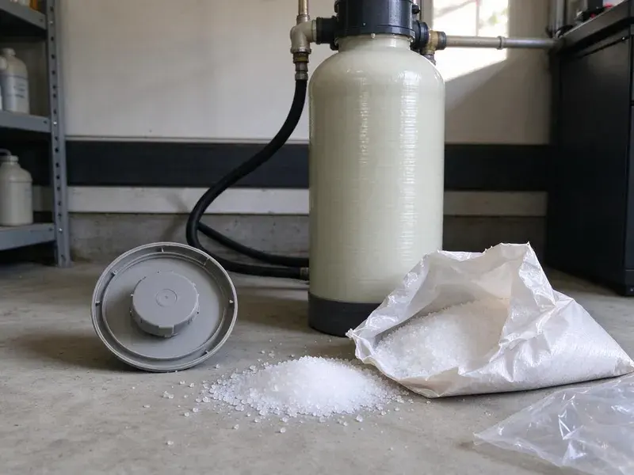

Plumbers for Frozen Pipes in Meadow Lakes, AK
When winter temperatures drop in Meadow Lakes, frozen pipes can become a serious concern for homeowners. CKN Plumbing is here to provide professional frozen pipe diagnosis and repair services across Alaska.
- Fast Freeze Response
- Quick Frozen Pipe Service
- Licensed and Insured
- Pipe Insulation and Heat Tape

Call Freeze Damage Plumbers Who Know Alaska Homes in Meadow Lakes, AK.
If a faucet will not run after a cold night, call us before the ice cracks the pipe.
Reliable Plumbers for Frozen Pipes in Meadow Lakes, AK
CKN Plumbing knows where plumbing is most likely to freeze: exterior walls, attics, crawl spaces, outdoor hose bibs, backflow preventers, pool and irrigation lines and pipes in unheated garages. We find the frozen section, thaw it safely and repair any split before the water pressure returns.
Our expertise includes:
- Electric and infrared thawing of copper, PEX and galvanized pipe
- Burst pipe repair in walls, attics, garages and outdoor lines
- Insulation, heat cable and frost-free hose bib installs

Additional Plumbing Maintenance Services in Meadow Lakes, AK
Our maintenance and specialty plumbing services in Meadow Lakes, AK catch small problems before they become emergencies.


Customers
Why Choose CKN Plumbing for Plumbers for Frozen Pipes in Meadow Lakes, AK?
Freezing temperatures, even for a short time, can turn a minor inconvenience into a major plumbing emergency. Our team acts fast to reduce risks and restore your water service safely.
- Rapid Response, CKN Plumbing responds quickly to address frozen pipe emergencies, minimizing the risk of burst pipes and water damage.
- Advanced Tools, We use specialized equipment like hydro-jetters for clearing ice blockages and thermal cameras to locate frozen sections without needless demolition.
- Damage Prevention, Our preventive advice and services help you protect your home against future freezing weather conditions.
Citywide Coverage
From downtown to the farthest suburbs, our technicians are dispatched efficiently across Meadow Lakes to provide timely frozen pipe services. You can count on us to be there when you need us most, minimizing potential damage to your property.
Experienced Team
Our plumbers have thawed and repaired hundreds of frozen lines during cold snaps. They know the usual trouble spots in local homes and find frozen sections quickly.
Safety-First Approach
Safety is essential when dealing with frozen pipes, especially when applying heat or working with pressurized lines. We adhere strictly to all local Meadow Lakes and Alaska plumbing codes and safety protocols to protect your home and our technicians.
Trusted Certified Meadow Lakes Plumbing Services Professionals
At CKN Plumbing, we take pride in providing certified plumbing services throughout Meadow Lakes, AK. Backed by leading industry credentials, our experienced plumbers combine technical skill with genuine customer care. Whether it is repair, installation, or maintenance, we follow strict safety and quality standards to deliver lasting results you can trust.
Call Us Now PHCC Plumbing Contractor Recognition
PHCC Plumbing Contractor Recognition Better Business Bureau (BBB) Accreditation
Better Business Bureau (BBB) Accreditation Angi Certified Pro
Angi Certified Pro ISO 9001 Quality Management Certification
ISO 9001 Quality Management CertificationDependable Plumbers for Frozen Pipes Services in Meadow Lakes, AK
Frozen Water Line Diagnosis in Meadow Lakes, AK
Identifying exactly where a pipe is frozen can be challenging without specialized tools. CKN Plumbing uses diagnostic equipment, including thermal imaging cameras and acoustic leak detectors, to pinpoint the precise location of frozen sections in your water lines. This allows us to target the thawing process effectively and avoid needless wall or ceiling demolition. Our accurate diagnosis ensures a more efficient and less invasive repair process in Meadow Lakes, AK.

Thawing Drain Lines and Sewer Pipes in Meadow Lakes
While less common, drain lines and sewer pipes can also freeze, leading to significant backups and health hazards. CKN Plumbing offers thawing services for these critical lines, often using hot water jetting equipment to melt ice blockages safely. We ensure that once thawed, the system is clear and functional, preventing further issues. Our expertise extends beyond water supply lines to all aspects of your property's plumbing in Meadow Lakes.
Water Heater Line Thawing and Repair in Meadow Lakes
The water lines leading to and from your water heater can also freeze, especially if located in an unconditioned space like a garage or utility closet in Meadow Lakes. This can completely stop your hot water supply or damage the heater itself. Our plumbers are skilled at safely thawing these lines, inspecting for any damage to the water heater unit, and ensuring proper function is restored. We handle both traditional tank and tankless water heater setups.
Backflow Preventer and Irrigation Freeze Repair in Meadow Lakes
Backflow preventers and irrigation valves sit above ground and are exposed to the coldest air. Frozen backflow assemblies can crack their bodies or bonnets, causing leaks and failed tests. We repair or replace the assembly, insulate it with a fitted cover and recommend draining when deep cold is forecast. Many water providers require a passing backflow test after repairs, and we can set that up.
Preventative Pipe Winterization in Meadow Lakes
Prevention is key to avoiding frozen pipes in Meadow Lakes. We offer professional winterization services, especially for homes that might be vacant or have vulnerable plumbing. This includes draining irrigation systems, insulating exposed pipes in attics or crawl spaces, and advising on proper faucet dripping during cold snaps. We can also install heat trace cables on critical lines to provide active protection against freezing, giving you peace of mind when temperatures drop.
Hose Bib and Outdoor Faucet Repair in Meadow Lakes, AK
Outdoor faucets freeze easily, especially with a hose left connected. A split often hides inside the wall and only shows when the faucet is turned on in spring. We replace damaged hose bibs with frost-free models from brands like Woodford and Prier that shut off water inside the warm part of the wall. Insulated covers add more protection on cold nights.
Frozen Pipe Repair Cost Comparison in Meadow Lakes, AK
Thawing an accessible frozen pipe typically costs $150 to $400. Repairing a burst pipe typically costs $250 to $800 for an accessible line and more when walls or ceilings must be opened. Replacing a hose bib with a frost-free model runs about $200 to $450. Prevention work like insulation and heat cable usually costs far less than repairing a single burst line and its water damage.

Post-Thaw Pipe Inspection & Repair in Meadow Lakes, AK
After a pipe has frozen and thawed, it is important to inspect for any hairline cracks or weaknesses that may have developed. CKN Plumbing provides thorough post-thaw inspections using pressure tests and visual checks to identify potential future leak points. If any damage is found, we perform prompt repairs to secure your plumbing system against future failures. This careful inspection is vital for the longevity of your plumbing in Meadow Lakes, AK.
Plumbers for Frozen Pipes Near Me in Meadow Lakes, AK
When you search for plumbers for frozen pipes near me in Meadow Lakes, AK, you want a reliable and swift response. CKN Plumbing is your local expert, always ready to tackle your frozen pipe emergencies with the right tools and knowledge. We understand the concerns of Alaska homeowners and act quickly to prevent further damage.
Local plumbers understand how Alaska homes are built and where pipes are most exposed. We know the attic layouts, exterior wall runs and outdoor equipment typical around Meadow Lakes. That knowledge helps us find the frozen spot quickly.
CKN Plumbing at a Glance
- Licensed and insured plumbers serving Meadow Lakes, AK
- Same-day appointments and 24/7 emergency response
- Clear written estimates, no hidden fees
- 4.9-star rated by 309+ Alaska customers
Meadow Lakes Map
Meadow Lakes Information
- Population
- 9,197
- Area codes
- Local
- Service area
- Meadow Lakes and communities within 40 miles
- Nearby
- Tanaina, Wasilla, Knik-Fairview, North Lakes
For homes in Meadow Lakes, AK, a severe cold snap can pose a serious risk of frozen pipes, especially in older homes with less insulation or those built over crawl spaces, making expert plumbing services essential. Frozen pipes are a serious and regular risk in Alaska, and a single heating failure in deep cold can freeze a home's lines within hours.
Expert Services
Trust our professionals for reliable CKN Plumbing solutions in Meadow Lakes, AK.
Our Specialized Plumbing Services in Meadow Lakes, AK
At CKN Plumbing, we provide a complete range of plumbing services across Meadow Lakes, AK. From leak detection to full system installations, our team ensures fast, precise, and affordable service for both residential and commercial properties. Explore our core services below:


How Our Plumbers for Frozen Pipes Process Works in Meadow Lakes, AK
Our process for handling frozen pipes in Meadow Lakes, AK is designed for efficiency, safety, and care.
Request a Quote
Call (928) 470-9007 anytime, day or night, to report your frozen pipe issue. Our customer service team will gather details and schedule an immediate dispatch for emergencies, or a scheduled appointment for preventive services.
Diagnosis & Thawing
Our technician arrives promptly, using thermal imaging and experience to locate the frozen sections. We then employ safe, controlled methods like heat guns or warm air to gently thaw the ice without damaging your pipes.
Repair & Prevention
After thawing, we inspect for any damage, especially potential bursts, and perform needed repairs using durable materials like PEX or copper. We also provide recommendations for insulation or heat cables to prevent future freezing.
Frequently Asked Questions About Plumbers for Frozen Pipes in Meadow Lakes
Thawing an accessible frozen pipe in Meadow Lakes usually costs $150 to $400. Burst pipe repairs typically run $250 to $800, with higher costs when drywall or ceilings must be opened. We give you pricing before we start.
Minor thawing and simple pipe repairs usually do not require a permit in Meadow Lakes. However, if the repair involves significant re-piping, altering the main water line, or work on gas lines tied to water heaters, a plumbing permit may be necessary. Our team handles all necessary permitting for you.
Common signs of a frozen pipe include a sudden loss of water pressure, no water coming out of a faucet, or odd noises like gurgling or banging from your pipes. You might also see visible frost on exposed pipes or notice a damp spot on a wall or ceiling if a slow leak has begun.
A frost-free hose bib has a long stem that shuts off water inside the warm part of the wall. Brands like Woodford and Prier make reliable models. They greatly reduce freeze damage at outdoor faucets.
Disconnect hoses, cover outdoor faucets and backflow preventers, and let a faucet drip on exterior walls during hard freezes. Insulating attic, crawl space and garage lines helps most. We can install insulation, heat cable or relocate vulnerable pipes.
To prevent future freezing in Meadow Lakes, insulate exposed pipes, especially those in attics, crawl spaces, and exterior walls. Disconnect garden hoses and drain outdoor spigots. Consider dripping faucets during extreme cold, especially those on exterior walls. For long-term solutions, we can install heat cables or upgrade vulnerable pipe sections.
Many policies cover sudden water damage from a burst pipe, though coverage varies. We can provide photos and a written report of the repair. Check with your insurer about your specific policy.
Yes, if a pipe in or under your concrete slab freezes and bursts, it can cause a slab leak. This type of leak is especially damaging and difficult to repair, often requiring specialized leak detection and cutting into the slab to access the pipe. Preventing frozen pipes is important for slab homes in Meadow Lakes.
What People Are Saying About Our Plumbing Experts?

Patricia H.
We had a slab leak that two other companies could not find. CKN Plumbing located it in under an hour, explained our options, and the price matched the quote to the dollar.
Slab Leak Repair · Tanaina, AK
Mark T.
When our office needed drain cleaning, CKN Plumbing provided quick, reliable service. The plumber arrived on time and made sure every drain flowed perfectly before leaving. Very satisfied.
Drain Cleaning · Fishhook, AK
Sofia M.
Two new toilets installed in one visit, no mess left behind, and the tech even adjusted a faucet he noticed was dripping. Fair pricing and really friendly.
Toilet Installation · Tanaina, AK
Robert G.
The trenchless sewer replacement saved our front yard. They walked us through the camera inspection footage first so we knew exactly what we were paying for.
Sewer Line Replacement · Fishhook, AKJames P.
Our commercial plumbing system had a leak under the sink, and CKN Plumbing handled it professionally. The plumbers arrived quickly and restored everything without disruption to our customers.
Commercial Plumbing · Meadow Lakes, AK
Daniel K.
A pipe burst at 11 pm and they actually answered. The plumber showed up within the hour, shut everything down, and had us back to normal the next morning. Could not ask for more.
Emergency Plumbing · Fishhook, AK